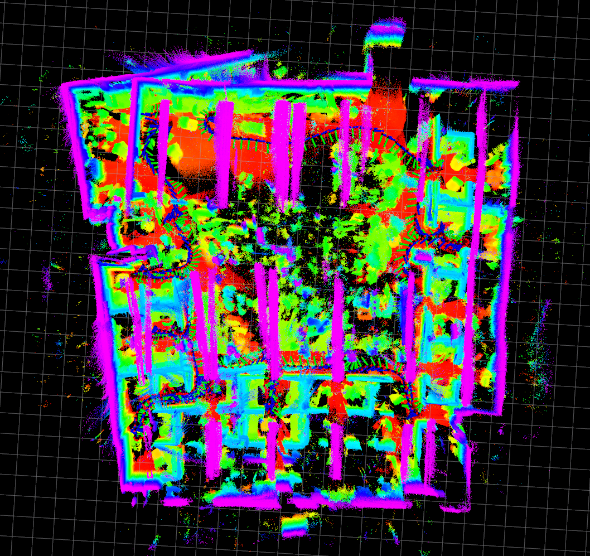

2018-01-16
2018-01-16-14-41-13
| Short loop through "bump space" 4th floor of Levine Hall (Graduate Research Wing). | ||
| sensor rig: Falcam | location: Levine | |
| duration: 163s | ||
| approx path length: 95m | altitude difference: 2.4m | |
| median/maximum velocity: 0.63 / 1.27 m/s | median/maximum angular velocity: 0.23 / 1.26 rad/s | |
| environment: indoors | lighting: artificial | tags: no |
| rosbag with raw data (16Gb) | tar file with calibration and launch files | rosbag with odometry (29Mb) |
2018-01-16-15-39-11
| Starting near "bump space", the path goes upstairs to 5th floor of Levine Hall, around the elevator, back down the stairways near the elevator, and returns to the starting point. | ||
| sensor rig: Falcam | location: Levine | |
| duration: 314s | ||
| approx path length: 227m | altitude difference: 5.43m | |
| median/maximum velocity: 0.70 / 1.53 m/s | median/maximum angular velocity: 0.18 / 1.03 rad/s | |
| environment: indoors | lighting: artificial | tags: no |
| rosbag with raw data (30Gb) | tar file with calibration and launch files | rosbag with odometry (57Mb) |
2018-01-16-16-18-11
| Trip through the main GRASP lab at 403 Levine Hall. This space is also recorded in sequences 2018-01-23-18-12-42, 2018-02-28-20-04-10, and 2018-03-02-08-06-10 for detecting scene changes. | ||
|  | ||
| sensor rig: Falcam | location: Levine | |
| duration: 253s | ||
| approx path length: 89m | altitude difference: 0.94m | |
| median/maximum velocity: 0.34 / 0.97 m/s | median/maximum angular velocity: 0.36 / 0.97 rad/s | |
| environment: indoors | lighting: artificial | tags: no |
| rosbag with raw data (25Gb) | tar file with calibration and launch files | rosbag with odometry (45Mb) |
2018-01-16-16-44-05
| From the GRASP lab at 403 Levine down 3 floors via the stairways into the Levine lobby. | ||
| sensor rig: Falcam | location: Levine | |
| duration: 140s | ||
| approx path length: 78m | altitude difference: 11.25m | |
| median/maximum velocity: 0.57 / 1.14 m/s | median/maximum angular velocity: 0.30 / 1.31 rad/s | |
| environment: indoors | lighting: artificial | tags: no |
| rosbag with raw data (14Gb) | tar file with calibration and launch files | rosbag with odometry (25Mb) |
2018-01-16-16-49-56
| From the Levine Hall lobby into the courtyard and back. | ||
 |
||
| sensor rig: Falcam | location: Levine | |
| duration: 223s | ||
| approx path length: 166m | altitude difference: 3.93m | |
| median/maximum velocity: 0.79 / 1.21 m/s | median/maximum angular velocity: 0.18 / 1.06 rad/s | |
| environment: indoors/outdoors | lighting: artificial/natural | tags: no |
| rosbag with raw data (22Gb) | tar file with calibration and launch files | rosbag with odometry (40Mb) |
2018-01-16-16-55-22
| In front of Levine Hall main entrance, around the bicycle racks. | ||
| sensor rig: Falcam | location: Levine | |
| duration: 84s | ||
| approx path length: 90m | altitude difference: 1.64m | |
| median/maximum velocity: 1.15 / 1.46 m/s | median/maximum angular velocity: 0.21 / 1.23 rad/s | environment: outdoors | lighting: natural | tags: no |
| rosbag with raw data (8.2Gb) | tar file with calibration and launch files | rosbag with odometry (15Mb) |